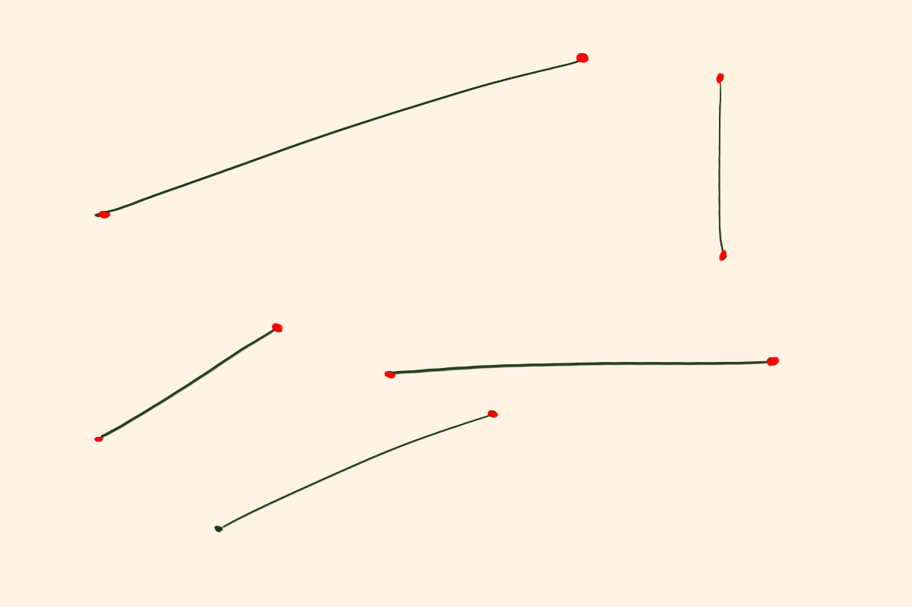
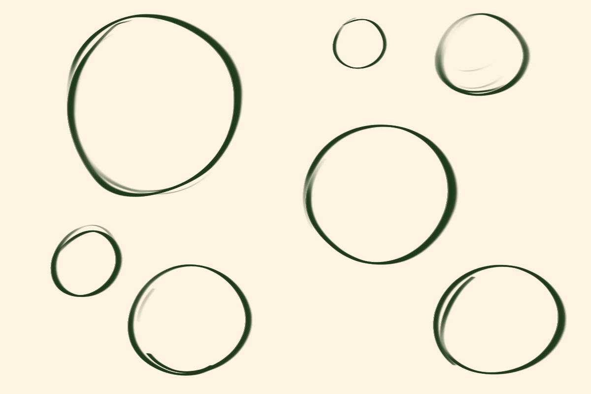
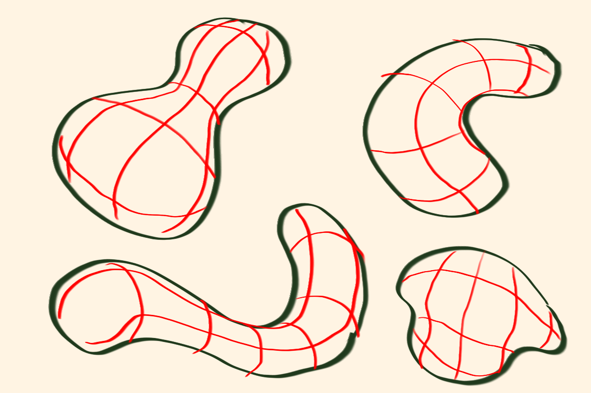
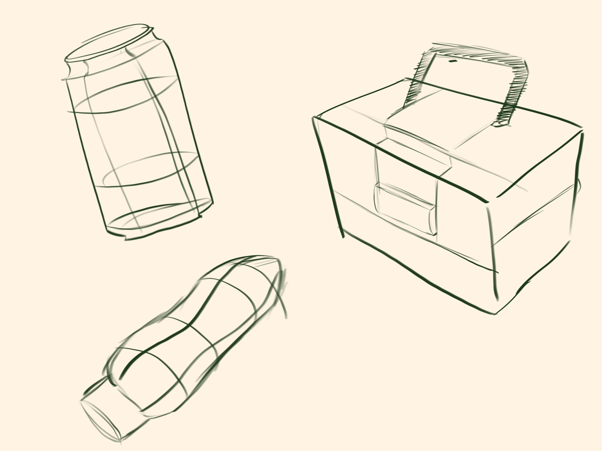

Welcome to the beginning of your drawing journey! whether you're a complete beginner
or have some experience, these fundamentals will help you build a strong foundation for
your drawing skills.
Drawing Exercises to get you started
Most beginners think they need to know everything to start drawing,
but the cool thing is, you can start drawing with just a few basic
exercises! Here are a few exercises that I first started with when I
was first learning how to draw.
Exercise 1: Line Control
Line control is a fundamental skill in drawing.
Practice drawing straight lines that connect two points on your page. When
drawing any sort of controlled line, it's important to keep your hand and wrist
relaxed and mostly draw from your shoulder. this will help you create smooth,
confident lines. Start with short lines and gradually increase the length as
you become more comfortable.

Exercise 2: Circles
Drawing circle is another very fundamental exercise.
Try drawing circles of different sizes on your page using one line. You may be thinking,
"I can't draw a perfect cicle!" and that's okay! The goal of this exercise is to practice drawing
circles with one continuous line, not to create a perfect circle. the key here is to try to ghost the
motion of the circle, again, using your shoulder, with the pencil hovering above the page. Then, when
you feel more comfortable, you can draw the circle on the page. Repeat this exercise with different sizes
until you feel more comfortable with the motion.

Exercise 3: Organic Shapes
Organic shapes are shapes of varing sizes and forms, random blobs if you will.
This is where you can get really creative and have fun! Start by drawing a few random
organic shapes on your page, then use contour lines to add depth and dimensions to your shapes.
Contour lines are curved lines that follow the surface of a shape, helping it appear three-dimensional
instead of flat. This exercise is a great way to practice and understand how forms work in drawing.

Exercise 4: Observation Drawing
Now we're gonna take evrything we learned in our previous exercises and apply it
to drawing from observation. I promise this is not as scary as it sounds! At its most fundamental level,
everything you obsverve can be built off of the exercises we just learned. Got a soda can on your desk?
That's literally a cylinder, two circles and straight lines, just like we practiced! The key to observational
drawing is to break down what you see into simple and basic shapes. Start by drawing objects around you by using
the exercises we just learned. Don't worry about making it perfect, just try to capture the shape and form of the
objects you see. Give it a shot!

Keep Practicing!
Remember, consistent practice is key to improving your drawing skills.
Don't get discouraged if progress feels slow at first. Every artist
starts somewhere, and with dedication and practice, you'll see improvement
over time. keep challening yourself with new exercises and techniques, and
most importantly, have fun!